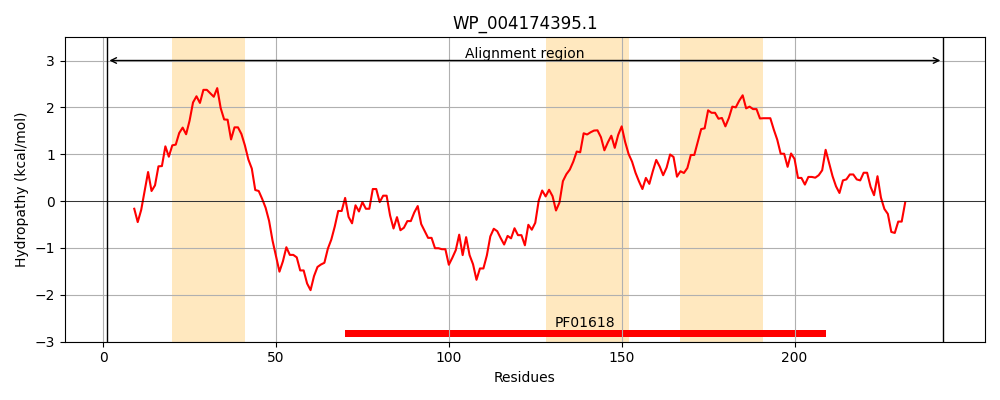
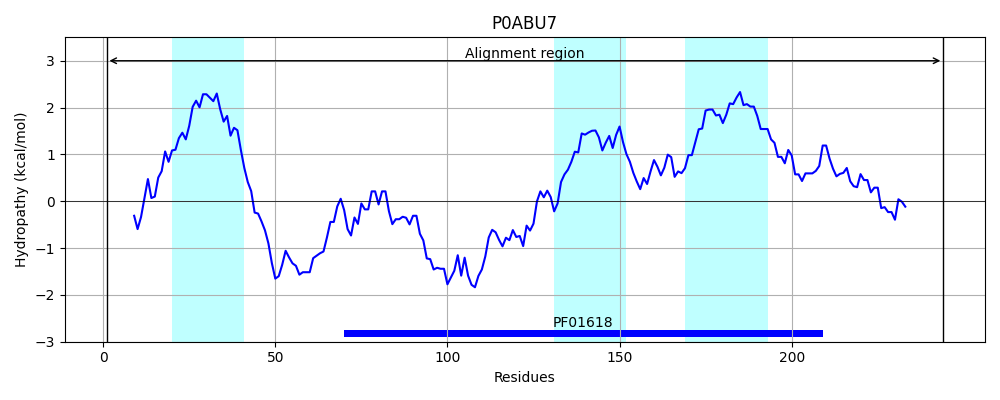
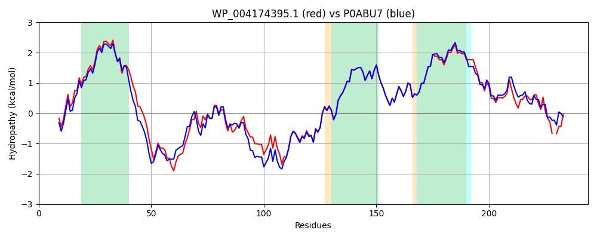

Hit Accession: P0ABU7
Hit TCID: 1.A.30.2.1
Hit Description: gnl|BL_ORD_ID|8724 gnl|TC-DB|P0ABU7|1.A.30.2.1 Biopolymer transport protein exbB OS=Escherichia coli (strain K12) GN=exbB PE=1 SV=1
Mach Len: 244
e:0.000000
Query TMS Count : 3
Hit TMS Count: 3
TMS-Overlap Score: 3.350000
Predicted Substrates:CHEBI:9175;sodium(1+), CHEBI:5584;hydron
BLAST Alignment:
Score: 996 , Bit scores: 388 bits, E-value: 1.7e-138, Alignment length: 244, Percentage identity: 84
Query: 1 MGNNLMQADLSVWGMYHHADIVVKVVMIGLILASVVTWAIFFGKGAEILASKRRLKREQQQLAEARSLDQASDIASAFEAKSLTTQLINEAQNELELSAGAEDNEGIKERTGFRLERRVAAVGRHMGRGNGYLATIGAISPFVGLFGTVWGIMNSFIGIAQTQTTNLAVVAPGIAEALLATAIGLFAAIPAVVIYNIFARMIGSYKASLGDVAAQVLLLQSRDLDLSAS-GVKPVRSAQKLRVG 243
MGNNLMQ DLSVWGMY HADIVVK VMIGLILASVVTWAIFF K E KRRLKREQQ LAEARSL+QA+DIA+ F +KSL+ L+NEAQNELELS G++DNEGIKERT FRLERRVAAVGR MGRGNGYLATIGAISPFVGLFGTVWGIMNSFIGIAQTQTTNLAVVAPGIAEALLATAIGL AAIPAVVIYN+FAR IG +KA LGDVAAQVLLLQSRDLDL AS PVR AQKLR G
Sbjct: 1 MGNNLMQTDLSVWGMYQHADIVVKCVMIGLILASVVTWAIFFSKSVEFFNQKRRLKREQQLLAEARSLNQANDIAADFGSKSLSLHLLNEAQNELELSEGSDDNEGIKERTSFRLERRVAAVGRQMGRGNGYLATIGAISPFVGLFGTVWGIMNSFIGIAQTQTTNLAVVAPGIAEALLATAIGLVAAIPAVVIYNVFARQIGGFKAMLGDVAAQVLLLQSRDLDLEASAAAHPVRVAQKLRAG 244 | Protein Hydropathy Plots: |
|---|
|  |  |
Pairwise Alignment-Hydropathy Plot:
|
|---|
|  |